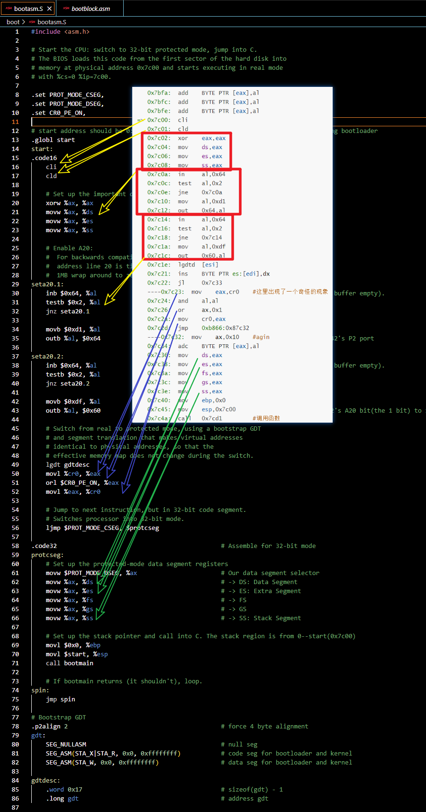
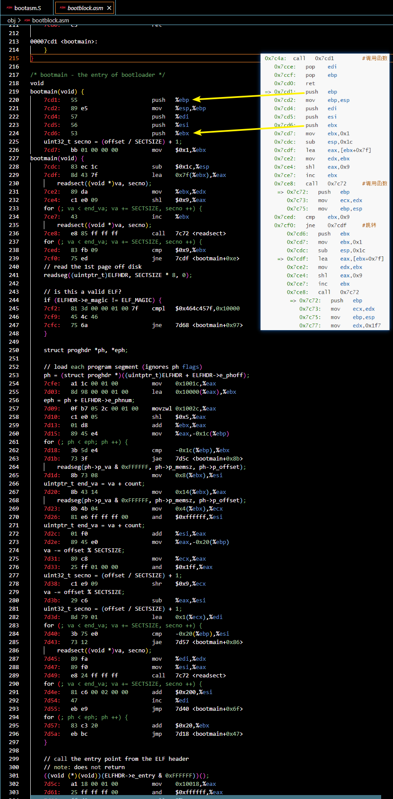

1 2 3 4 5 6 <font color ="red" > 一 </font > <font color ="orange" > 二 </font > C:\blog\source\_posts\ucore-lab1\
实验视频链接(*)： 操作系统 - 清华大学 - 学堂在线 (xuetangx.com)
实验文档链接(*)： 练习2 | uCore Lab Documents (gitbooks.io)
实验参考链接(*)： uCore实验 - Lab1 | Kiprey’s Blog
参考链接：操作系统实验Ucore lab1_StarashZ的博客-CSDN博客
参考链接：ucore lab1_CNRalap的博客-CSDN博客
理论 学理论的话去上面我贴的博客里学吧，我东西不多，总结不出来什么，
但多少能写点东西，就直接写在下面的实操里面里好了。
实操 以下是我各练习的实际动手操作
将实验转至ubuntu18.04 1、下载实验代码(需翻墙)，解压移至ubuntu18.04
链接：raw.githubusercontent.com
安装gcc-4.8：$ sudo apt install gcc-4.8
查看是否安装成功：$ gcc-4.8 --version
安装qemu：$ sudo apt install qemu-system
下载失败则换中科院源：https://mirrors.ustc.edu.cn/repogen/ (可以不用进链接，源我copy在下面了，照着步骤做就行)
/etc/apt 目录下修改sources.list ：$ sudo rm sources.list 、$ sudo vim sources.list
以下内容复制进sources.list，(链接：LUG’s repo file generator (ustc.edu.cn) ，Ubuntu、HTTPS、IPv4、bionic(18.04)、Download)
1 2 3 4 5 6 7 8 9 10 11 12 13 14 15 deb https://mirrors.ustc.edu.cn/ubuntu/ kinetic main restricted universe multiverse deb-src https://mirrors.ustc.edu.cn/ubuntu/ kinetic main restricted universe multiverse deb https://mirrors.ustc.edu.cn/ubuntu/ kinetic-security main restricted universe multiverse deb-src https://mirrors.ustc.edu.cn/ubuntu/ kinetic-security main restricted universe multiverse deb https://mirrors.ustc.edu.cn/ubuntu/ kinetic-updates main restricted universe multiverse deb-src https://mirrors.ustc.edu.cn/ubuntu/ kinetic-updates main restricted universe multiverse deb https://mirrors.ustc.edu.cn/ubuntu/ kinetic-backports main restricted universe multiverse deb-src https://mirrors.ustc.edu.cn/ubuntu/ kinetic-backports main restricted universe multiverse ## Not recommended # deb https://mirrors.ustc.edu.cn/ubuntu/ kinetic-proposed main restricted universe multiverse # deb-src https://mirrors.ustc.edu.cn/ubuntu/ kinetic-proposed main restricted universe multiverse
$ sudo apt-get update 到这中科院源就算是换好了，重新输入qemu安装指令即可，还不行的话可以采取重启虚拟机、换其他运营商的热点等措施
$ qemu-system-i386 --version：提示如下表示qemu安装成功
1 2 3 xy666@ubuntu:~/Desktop/czxt$ qemu-system-i386 --version QEMU emulator version 2.11.1(Debian 1:2.11+dfsg-1ubuntu7.40) Copyright (c) 2003-2017 Fabrice Bellard and the QEMU Project developers
打开移动至ubuntu18.04中的实验目录，切至lab1目录(ucore_os_lab-master/labcodes/lab1)，更改Makefile中的以下字段，保存
HOSTCC := gcc 改为 HOSTCC := gcc-4.8
CC := $(GCCPREFIX)gcc 改为 CC := $(GCCPREFIX)gcc-4.8
$ make V= 、$ make clean (make：编译，make clean：清除编译)
$ make qemu
打开两个终端
第一个终端输入：$ qemu-system-i386 -hda ./bin/ucore.img -S -s
第二个终端打开gdb后在gdb中输入：$ target remote :1234
最后在0x7c00下断点运行：gdb-peda$ b *0x7c00
练习1 1 2 $ cd ucore_os_lab-master/labcodes/lab1 $ make V=
练习2 1 2 3 4 5 6 7 8 9 10 11 12 13 14 15 $ vim gdbinit file obj/bootblock.o set architecture i8086 target remote :1234 b* 0x7c00 define hook-stop x/i $eip end continue $ make debug
我没用以上的 $ make debug 开启调试
我用的下面的方法：
1 2 3 4 5 6 7 8 9 10 11 12 $ make clean $ make qemu $ qemu-system-i386 -hda ./bin /ucore.img -S -s $ gdb gdb-peda$ target remote :1234 gdb-peda$ b *0x7c00 gdb-peda$ r
任务：
1 2 3 4 5 6 7 8 9 10 11 12 13 14 gdb连接上qemu后(即gdb-peda$ target remote :1234 这一步之后)ni/si单步调试即可 跟着上面的操作输指令即可 比较发现从0x7c00 开始就是在执行 bootasm.S 和 bootblock.asm 中的代码 bootasm.S在ucore_os_lab-master/labcodes/lab1/boot/目录下 bootblock.asm在ucore_os_lab-master/labcodes/lab1/obj/目录下 略
过程(从0x7c00开始)，以下代码是我从gdb调试中抠出来的，gdb和bootasm.S用的是不同的汇编风格，例如mov和movl
1 2 3 4 5 6 7 8 9 10 11 12 13 14 15 16 17 18 19 20 21 22 23 24 25 26 27 28 29 30 31 32 33 34 35 36 37 38 39 40 41 42 43 44 45 46 47 48 49 50 51 52 53 54 55 56 57 58 59 60 61 62 63 64 65 66 67 68 69 70 71 0x7bfa: add BYTE PTR [eax],al 0x7bfc: add BYTE PTR [eax],al 0x7bfe: add BYTE PTR [eax],al => 0x7c00: cli 0x7c01: cld 0x7c02: xor eax,eax 0x7c04: mov ds,eax 0x7c06: mov es,eax 0x7c08: mov ss,eax 0x7c0a: in al,0x64 0x7c0c: test al,0x2 0x7c0e: jne 0x7c0a 0x7c10: mov al,0xd1 0x7c12: out 0x64,al 0x7c14: in al,0x64 0x7c16: test al,0x2 0x7c18: jne 0x7c14 0x7c1a: mov al,0xdf 0x7c1c: out 0x60,al 0x7c1e: lgdtd [esi] 0x7c21: ins BYTE PTR es:[edi],dx 0x7c22: jl 0x7c33 ----0x7c23: mov eax,cr0 #这里出现了一个奇怪的现象 0x7c24: and al,al 0x7c26: or ax,0x1 0x7c2a: mov cr0,eax 0x7c2d: jmp 0xb866:0x87c32 ----0x7c32: mov ax,0x10 #agin 0x7c34: adc BYTE PTR [eax],al 0x7c36: mov ds,eax 0x7c38: mov es,eax 0x7c3a: mov fs,eax 0x7c3c: mov gs,eax 0x7c3e: mov ss,eax 0x7c40: mov ebp,0x0 0x7c45: mov esp,0x7c00 0x7c4a: call 0x7cd1 #调用函数 0x7cce: pop edi 0x7ccf: pop ebp 0x7cd0: ret => 0x7cd1: push ebp 0x7cd2: mov ebp,esp 0x7cd4: push edi 0x7cd5: push esi 0x7cd6: push ebx 0x7cd7: mov ebx,0x1 0x7cdc: sub esp,0x1c 0x7cdf: lea eax,[ebx+0x7f] 0x7ce2: mov edx,ebx 0x7ce4: shl eax,0x9 0x7ce7: inc ebx 0x7ce8: call 0x7c72 #调用函数 => 0x7c72: push ebp 0x7c73: mov ecx,edx 0x7c75: mov ebp,esp 0x7ced: cmp ebx,0x9 0x7cf0: jne 0x7cdf #跳转 0x7cd6: push ebx 0x7cd7: mov ebx,0x1 0x7cdc: sub esp,0x1c => 0x7cdf: lea eax,[ebx+0x7f] 0x7ce2: mov edx,ebx 0x7ce4: shl eax,0x9 0x7ce7: inc ebx 0x7ce8: call 0x7c72 => 0x7c72: push ebp 0x7c73: mov ecx,edx 0x7c75: mov ebp,esp 0x7c77: mov edx,0x1f7 #......晕了，先列这么多

上图最后的 call bootmain 应该对应的是call 0x7cd1，现在进入bootblock中查看，的确进入了bootblock.asm中

接下来进行练习3
练习3 1、请分析bootloader是如何完成从实模式进入保护模式的：